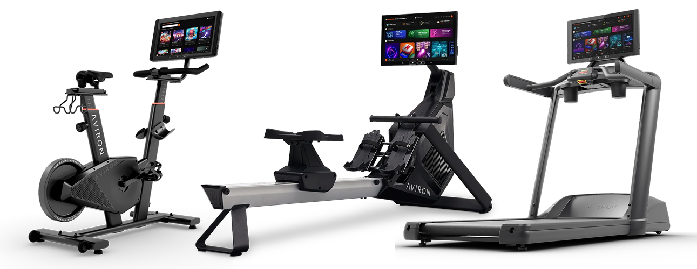

Discovery
I work with product owners to gather insights from users. By reviewing analytics, feedback, and support tickets, I identify pain points and uncover opportunities to improve the experience.

Aviron is a connected fitness platform that turns traditional workouts into engaging, gamified experiences. The client app runs directly on 16:9 screens embedded in Aviron’s rowing machines, bikes, and treadmills — acting as the core interface where users train, compete, and track their performance in real time.
Since joining Aviron in 2022, around the time the first version of the app launched, I’ve been the sole product designer working across multiple areas of the product. I collaborate closely with cross-functional teams to shape new features and continuously improve the overall user experience.
My design process typically includes the stages below, though it’s not always linear. Depending on the scope, timeline, and business priorities, some projects may only require one or two phases, while others involve revisiting certain stages multiple times. The case studies below reflect how this process adapts in real product development.
Discovery
I work with product owners to gather insights from users. By reviewing analytics, feedback, and support tickets, I identify pain points and uncover opportunities to improve the experience.
Problem Framing
I translate those insights into clear problem statements and goals. I help prioritize opportunities based on both user needs and business objectives, ensuring we focus on the most meaningful improvements.
Exploration
At this stage, I create user flows and wireframes to support discussions and align expectations across teams.
Design Execution
I build the design solution while maintaining consistency with the design system and improving it where needed. For more complex interactions, I create prototypes for internal validation, usability checks, or accessibility review. I also work closely with developers and QA during implementation.
Validation
After launch, I review analytics and real-world usage patterns, then identify areas for iteration based on both user behavior and internal feedback.

Here is the feature map of the app. While it includes a wide range of functionalities, to keep things concise I will focus on a few selected case studies and key screens.
To understand why engagement dropped over time, I reviewed player behavior with the product owner and looked at feedback from users who had tried the fishing game.

The gameplay itself was enjoyable, but the reward loop was not strong enough to sustain long-term engagement.
The current flow allows users to buy any map using coins. However, this system feels too easy for long-term players who already have a large number of coins collected from other workout sessions. As a result, the sense of challenge and progression is lost over time.
The original reward shop allowed users to unlock items after workouts, but progression felt disconnected and difficult to follow over time.
Users could earn rewards, but there was little sense of journey or long-term progression, which reduced motivation to return after the first few sessions.
The challenge was to improve retention without changing the core gameplay experience that users already enjoyed.
Goals
Constraints


The original goal was to improve long-term engagement and encourage users to revisit previously completed islands in Fishin’ Frenzy.
The first direction explored a Trophy Cabinet System, where each island contained:

As the concept evolved, a few key limitations became clear.
Progression Still Felt Optional
Although collectibles added depth, users could still immediately purchase and unlock new islands without meaningfully engaging with previous content.
This meant replay systems became secondary rather than core to progression.
High Content Production Cost
The system also introduced heavy content requirements.
Each island required:
As more islands were added, the system became increasingly difficult to scale efficiently.
Difficult to Extend Across Other Games
The Trophy Cabinet system worked specifically for Fishin’ Frenzy, but relied heavily on game-specific collectibles and assets.
This made it difficult to reuse as a shared progression framework across future games on the platform.
At this stage, the focus shifted from:
“How do we add more collectibles?” to:
“How do we create a scalable progression system that drives long-term engagement across multiple games?”
This led to exploration inspired by progression systems commonly seen in games like Candy Crush Saga, particularly around:
The final solution replaced unrestricted island purchasing with a progression-based unlock system.
Instead of immediately accessing new content, users now needed to:
before unlocking additional islands.
This created a more structured and rewarding progression loop while naturally encouraging replay behavior.

Stronger Engagement Loops
Progression became earned rather than instantly consumable, creating clearer long-term goals and stronger replay motivation.
More Scalable Across the Platform
Unlike the Trophy Cabinet system, the progression framework could be reused across multiple games without requiring entirely new collectible systems for each experience.
Lower Long-Term Production Cost
The final direction reduced dependency on continuously creating custom collectible assets and achievement systems for every new island.
Using the updated progression direction as the foundation, I designed a level-based map system that connected workouts directly to long-term progression.

Because this was a major UI change compared to the existing experience and potentially reusable for future games. We wanted to validate whether users could understand the system naturally on first interaction before moving into implementation.
Before development, we created an interactive prototype and conducted lightweight usability testing with several existing users through Discord.
The main goal was to validate:
Early positive signals
Most users (Actually, it's 3/3 users) immediately understood the core progression structure without additional explanation.
Common behaviors included:
Several users also mentioned that the system gave them a stronger reason to return and continue progressing.

Key learnings from testing
While the overall response was positive, the usability sessions also revealed important behavioral differences between user types.
One casual player mentioned that navigating between islands initially felt like “extra steps” before starting a workout, especially on days when the goal was simply to play quickly and casually.
This feedback helped reinforce the importance of keeping the progression flow lightweight and avoiding unnecessary friction before gameplay.
Another user expressed interest in viewing progression tasks directly during gameplay, which later influenced follow-up discussions around progression visibility.
Final refinements before implementation
Based on these observations, we introduced several additional behaviors before implementation:
After launch, we monitored early gameplay behavior and compared engagement trends across Aviron’s game experiences.
Following the Fishin’ Frenzy progression update, we observed a noticeable increase in workout activity tied to the game experience.

Key observation
The progression update appeared to increase curiosity and encourage users to spend more time exploring the new system.
We also observed a short-term increase in average play frequency per user after launch.
The data suggested that users were returning more frequently to continue map progression and unlock additional content.

Key observation
The strongest engagement appeared during the early exploration phase, where users were discovering the progression system and new islands.
While the progression system improved engagement overall, the update also introduced some usability trade-offs.
One noticeable drop came from avatar customization interactions. Since the “Change Avatar” action was now located inside the map flow instead of the previous direct-access flow, some users appeared less likely to interact with it.

This reinforced an important learning during the project:
Introducing deeper progression systems can improve engagement, but additional layers should not slow down or hide frequently used actions.
This project demonstrated how clearer progression and visible long-term goals can improve motivation in casual fitness games.
More importantly, the final level-based structure created a scalable progression framework that could later be adapted across future game experiences without requiring large amounts of custom collectible content for every release.


To understand where users were experiencing friction, I worked with the product owner to review user interview, surveys, and support tickets.
Several recurring issues appeared in the existing homepage.
What users struggled with

The homepage had grown over time without significant structural updates. New features were added into the existing layout, which made the experience less intuitive and increased visual complexity.
The goal was not to redesign the homepage completely, but to improve how information was prioritized so users could find key actions more quickly.
Goals
As the homepage continued evolving, one key challenge was deciding how to balance quick workout access, personal progress, and content discovery within a limited space.
To support that discussion, I explored several layout directions that prioritized different user needs. These concepts were used to align internally with the product owner before moving into implementation.
Option 1: Community-first

This direction emphasized leaderboard and social engagement by bringing competitive features into the first visible area.
We reviewed this direction because community interaction had become an important part of user retention. However, it reduced emphasis on workout access and added more visual density to the homepage.
Option 2: Progress-first

This concept prioritized achievements, streaks, and personal metrics at the top of the screen.
It addressed feedback from users who wanted easier access to progress-related information. During review, we found it shifted too much focus away from workout browsing, which remained the most common primary action.
Option 3: Balanced layout

This concept combined both approaches by surfacing progress information while preserving quick access to workout categories.
During discussion, this direction became the strongest base because it balanced the main user behaviors while remaining compatible with the existing product structure.
Rather than moving directly into implementation, this option was used as the foundation for the final iteration.
After aligning with the product owner, I used the third concept as the base direction and refined it further before implementation.
The initial layout still required scrolling to access some content, so I adjusted the structure to keep key information and primary actions visible within a single screen.

After launch, I worked with the product owner to review early user feedback and observe how the updated homepage was being used.

The redesign improved visibility of progress-related content and surfaced key actions more clearly. Several users shared positive reactions after the update, particularly around easier access to personal progress and featured content.
Some users also mentioned they became more aware of features like Day Streak and Monthly Challenge once those sections were moved higher on the homepage.
The release also surfaced new issues, particularly for first-time users.
Some users still found the homepage difficult to understand on first use, especially when navigating workout categories and understanding where to start.
Based on this feedback, we planed to introduce a guided onboarding flow and later moved the category section into a dedicated page, replacing part of that space with personalized recommendations.
These follow-up updates helped simplify the homepage further and supported faster workout entry.
This redesign improved discoverability, but it also showed that reorganizing content alone was not enough as the product continued growing.
The homepage increasingly needed to adapt to different user behaviors, especially between first-time users and returning users - which led to later improvements around onboarding and personalized recommendations.
Aside from the case studies above, I also designed many other feature screens for this product. To keep the project concise, I won’t break down every flow in detail — but you can browse this gallery for a quick overview of the remaining designs.


You made it this far, so why not say hello?
CONTACT ME